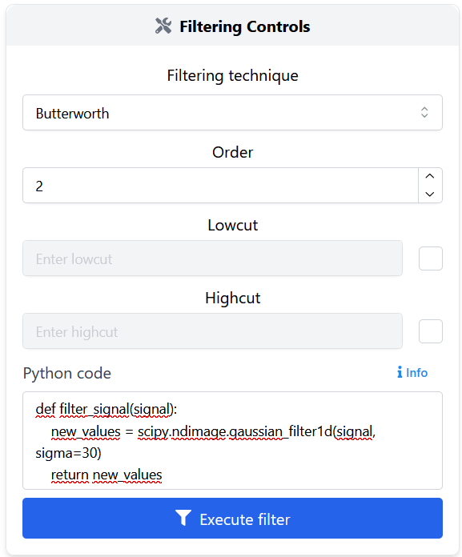
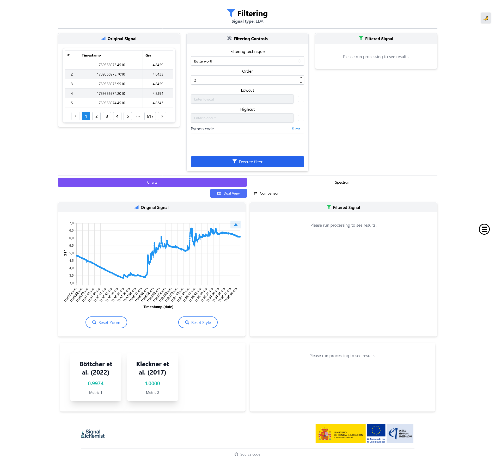

Filtering
Filtering is a fundamental step in signal preprocessing, especially for cleaning and enhancing physiological data such as photoplethysmogram (PPG) and electrodermal activity (EDA).
Overview
The filtering module enables users to apply a variety of signal filters with full configurability. It offers several predefined filters —including widely used digital filtering techniques that can be easily configured through intuitive UI controls— as well as support for custom Python code for more advanced use cases.
Built-in filters
You can select from several built-in filters via a dropdown:
Butterworth Filter
The Butterworth filter is a classic IIR (Infinite Impulse Response) filter known for having a maximally flat frequency response in the passband. This ensures minimal distortion of amplitude in the preserved frequency range.
Type: IIR
Phase response: Non-linear
Applications: Ideal for general-purpose filtering when amplitude preservation is critical and phase delay is acceptable.
Properties: Smooth roll-off, configurable low-pass/high-pass/band-pass
Bessel Filter
The Bessel filter is designed to maintain the wave shape of signals in the time domain, making it valuable in applications that require minimal phase distortion.
Type: IIR
Phase response: Nearly linear
Applications: Signals linke EDA where timing of features must be preserved
Properties: Gentle roll-off, excellent waveform fidelity, slower transition band
FIR (Finite Impulse Response) Filter
FIR filters are known for their inherent stability and linear phase behaviour. They are non-recursive and rely on a finite number of input samples.
Type: FIR (non-recursive)
Phase response: Linear
Applications: Situations requiring phase preservation (e.g., feature alignment across channels)
Properties: Very stable, supports high-order designs, ideal for multirate systems
Savitzky-Golay Filter
Unlike traditional frequency-based filters, the Savitzky-Golay filter smooths data by fitting successive subsets with low-degree polynomials using linear least squares.
Type: Smoothing filter
Applications: Peak preservation in PPG, EDA, and spectroscopic signals
Properties: Retains sharp features, excellent for denoising without destroying high-frequency events
Custom filters
Advanced users can define their own filtering logic in Python. To do this:
Select the «Python code» option inside the filtering node.
Paste your function following this format:
def filter_signal(signal): new_values = scipy.ndimage.gaussian_filter1d(signal, sigma=30) return new_values
Make sure the code is well written, with correct tabulations and blank spaces.
The function must be named filter_signal.
The input must be a single parameter that represents the signal values.
The output must be a filtered array with the same shape.
If there is a syntax error in the code, an error message will be displayed.
If the field is left blank, the filter will be executed with the other parameters from the form (this field will be ignored).
{kind=link}

Interface controls
Filtering technique: dropdown menu to choose the method.
Parameters: input fields to specify frequency cutoffs (determines the frequency threshold) and filter order (controls the steepness of the transition band).
Execute filter: applies the filter and updates the results displayed in the interface.
Core widgets: the results are displayed using core widgets, more specifically, charts and spectrum widgets. For more details, refer to the Core Widgets.
{kind=link}

Applications examples
Denoising PPG signals to remove motion artifacts.
Extracting low-frequency trends in EDA.